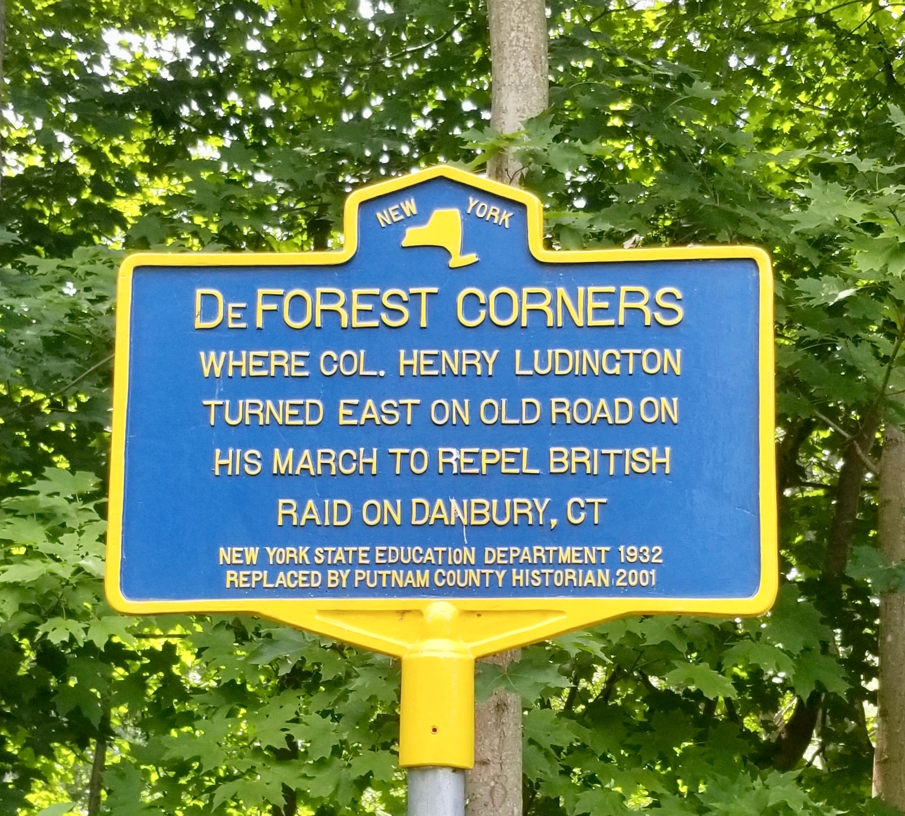

DeForest Corners
The crossroads where Colonel Henry Ludington’s militia column turned east on the old road, on the morning of April 27, 1777.

DEFOREST CORNERS
Where Col. Henry Ludington
turned east on old road on
his march to repel British
raid on Danbury, Ct.
About this Marker
This is the upstream of two roadside markers documenting Col. Henry Ludington’s march from his farm in the Fredericksburgh Precinct of Dutchess County (today the Town of Kent in Putnam County) to the New York–Connecticut state line, on the morning of April 27, 1777. Where the companion marker, a half mile to the southeast, records the column’s crossing into Connecticut, this marker records the routing decision: the point on the old road where Ludington turned his men east toward Danbury.
The fuller story — the alarm at Ludington’s farm on the night of April 26, the muster of the regiment from scattered farms in the dark, the British raid on the Continental supply depot at Danbury under Maj. Gen. William Tryon, the running fight at Ridgefield, and the popular but historiographically contested story of Sybil Ludington’s ride — belongs on the Col. H. Ludington marker page, which carries the main narrative. This page concentrates on what the DeForest Corners marker itself commemorates.
The route and the crossroads
The militia that mustered at Ludington’s farm on the night of April 26–27 had to move east, into Connecticut, to reach the theater of the British raid. The most direct overland route through the Patterson highlands led to a crossroads — DeForest Corners — where the old road forked. Here Ludington made the turn east. From this point the column descended toward the state line, which it crossed early on the morning of the 27th at the spot now marked by the companion sign.
The place-name DeForest reflects the local family of that name long established in this part of Patterson and Pawling. The De Forests were prominent enough in early Putnam County life that the surname appears in the published genealogical record — Louis Effingham De Forest’s 1926 Ludington-Saltus Records is one of the foundational sources cited in the Wikipedia treatment of Henry Ludington — though we have not researched the specific De Forest household whose property gave the crossroads its name.
The marker
The original marker at DeForest Corners was erected in 1932 by the New York State Education Department, as part of the program that produced thousands of the familiar blue-and-yellow signs across New York State during the Hoover and early Roosevelt years. The current marker was replaced in 2001 by the Putnam County Historian, preserving the 1932 wording. The matching marker at the state-line crossing was produced and replaced in the same program years — the two signs form a paired memorial of the route Ludington’s regiment took on the morning of April 27, 1777.
Town of Patterson, NY
(41.445283°, −73.550250°)
Sources
- On-site photograph of the New York State Education Department marker (1932 original, replaced in 2001 form by the Putnam County Historian).
- Willis Fletcher Johnson, Colonel Henry Ludington: A Memoir (privately printed, 1907) — primary biographical source on Ludington’s 1777 march. Full text via Project Gutenberg.
- Henry Ludington and Danbury Raid — Wikipedia articles.
- Louis Effingham De Forest, Ludington-Saltus Records (New Haven: Tuttle, Morehouse & Taylor, 1926) — standard genealogical source, also relevant to the De Forest family name.